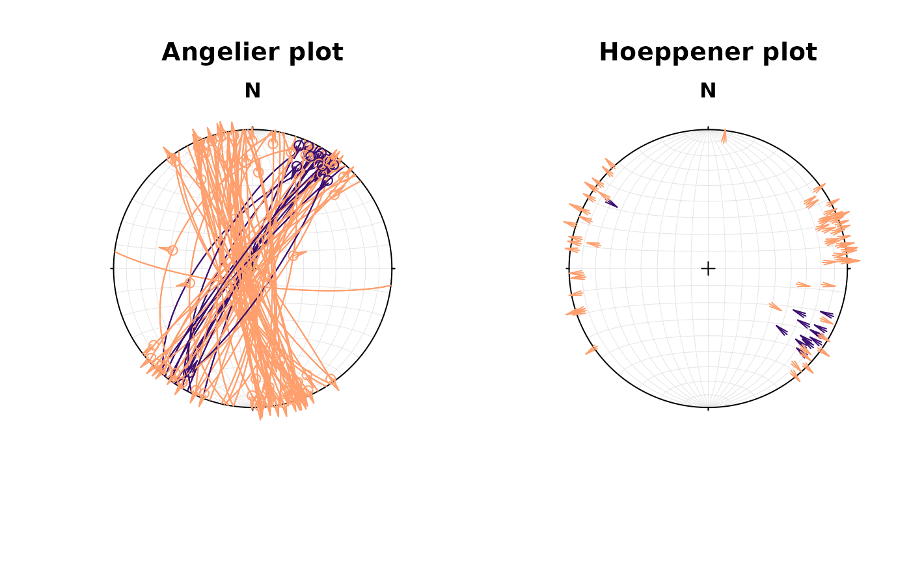
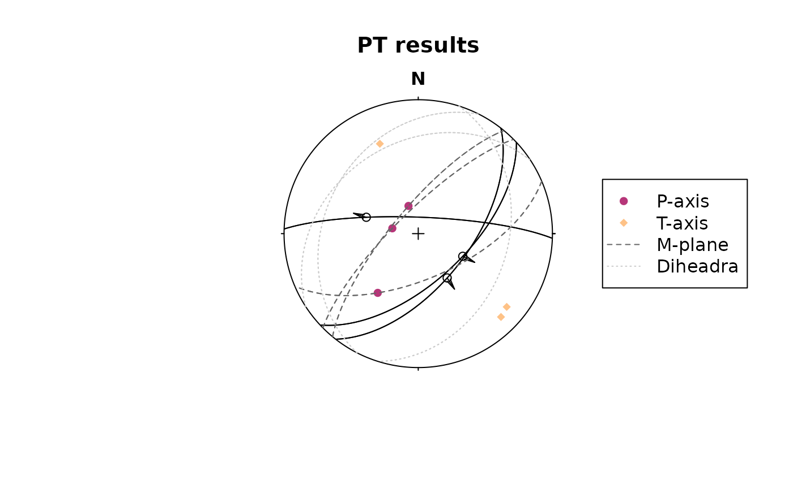
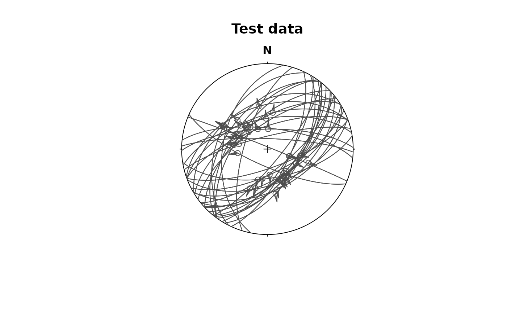
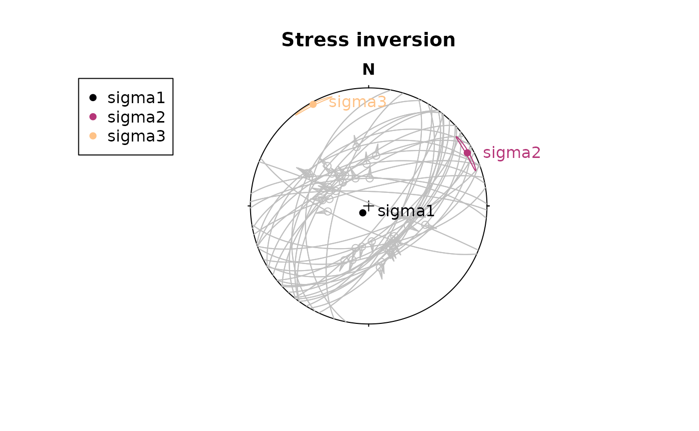
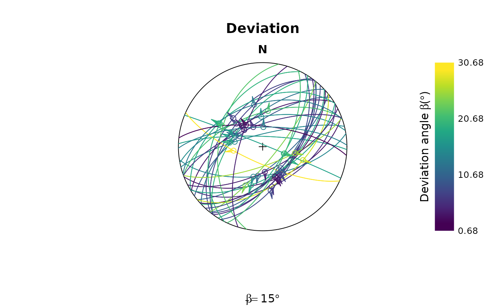

This tutorial demonstrates the "Fault" object. It also
shows how you can extract paleo-stress directions from fault slip data,
and how you can derive displacement components from fault slip.
Fault objects
A fault is given by the orientation of its plane (dip direction and dip angle), the orientation of the slip (e.g. measured from striae, given in azimuth and plunge angles), and the sense of displacement:
my_fault <- Fault(120, 50, 60, 110, sense = -1)Sense of fault displacement is 1 or -1 for normal or thrust offset, respectively.
Rake of the fault, i.e. the angle between fault slip vector and fault strike:
Fault_rake(my_fault)## [1] -107.2294Define a fault by just knowing the orientation of the fault plane, the sense, and the rake
# 1. Define a plane through dip direction, dip angle
fault_plane <- Plane(c(120, 120, 100), c(60, 60, 50))
# 2. Define a fault through the plane and rake angle:
Fault_from_rake(fault_plane, rake = c(84.7202, -10, 30))## Fault object (n = 3):
## dip_direction dip azimuth plunge sense
## [1,] 120 60 109.52858 59.581591 1
## [2,] 120 60 204.96163 8.649165 -1
## [3,] 100 50 30.36057 22.521012 1Often, measured orientation angles can be (slightly) imprecise and subjected to some random noise. Thus the slip vector will not lie (perfectly) on the fault plane, judging by the measurements. To correct the measurements so that this will not be the case:
p <- Pair(120, 60, 110, 58)
misfit_pair(p)## $fvec
## Vector (Vec3) object (n = 1):
## x y z
## 0.4306074 -0.7432627 0.5119940
##
## $lvec
## Vector (Vec3) object (n = 1):
## x y z
## -0.1752467 0.4876291 0.8552815
##
## $misfit
## [1] 0.02793105
correct_pair(p)## Pair object (n = 1):
## dip_direction dip azimuth plunge
## 120.08575 59.20326 109.76769 58.79085A
"Pair"object is a container of associated plane and line measurements. Basically like a fault without the sense of displacement.
Plotting faults
Fault objects consist of planes (fault plane), lines (e.g. striae), and the sense of movement. There are two ways how these combined features can be visualized, namely the Angelier and the Hoeppener plot.
- The Angelier plot shows all planes as great circles and lineations as points (after Angelier , 1984). Fault striae are plotted as vectors on top of the lineation pointing in the movement direction of the hanging wall. Easy to read in case of homogeneous or small datasets.
- The Hoeppener plot shows all planes as poles while lineations are not shown (after Hoeppener, 1955). Instead, fault striae are plotted as vectors on top of poles pointing in the movement direction of the hanging wall. Useful in case of large or heterogeneous datasets.
# simongomez is a example fault dataset:
# define some colors for each fault in the dataset (here the fault sense)
fault_cols <- assign_col(simongomez[, 5], pal = viridis::magma, begin = .2, end = .8)
par(mfrow = c(1, 2))
stereoplot(title = "Angelier plot")
angelier(simongomez, col = fault_cols)
stereoplot(title = "Hoeppener plot")
hoeppener(simongomez, col = fault_cols, points = FALSE)
Fault stress analysis
The Wallace-Bott hypothesis states that fault slip occurs parallel to the maximum shear stress. This allows to reconstruct stress axes using fault-slip data. {structr} offers several techniques to calculate the orientation of principal stress axes, the simple P-T method, and a fault-slip inversion technique.
P-T method
This simple technique calculates PT-axes, kinematic plane (M), and dihedra separation plane (d).
First we load some example data (here the first three faults from the TYM dataset by from Angelier, 1990)1
## Fault object (n = 3):
## dip_direction dip azimuth plunge sense
## [1,] 137 61 117.0135 59.46650 1
## [2,] 128 59 146.8990 57.58045 1
## [3,] 2 80 287.5304 56.63295 1## $p
## Line object (n = 3):
## azimuth plunge
## [1,] 340.6153 72.15071
## [2,] 281.6092 73.96385
## [3,] 214.3217 45.50717
##
## $t
## Line object (n = 3):
## azimuth plunge
## [1,] 129.6815 15.44075
## [2,] 135.2532 13.45689
## [3,] 336.9158 27.88916
##
## $m
## Plane object (n = 3):
## dip_direction dip
## [1,] 42.11395 81.26433
## [2,] 223.18909 81.43997
## [3,] 265.80721 58.54232
##
## $d
## Plane object (n = 3):
## dip_direction dip
## [1,] 297.0135 30.53350
## [2,] 326.8990 32.41955
## [3,] 107.5304 33.36705Plot the results
stereoplot(title = "PT results", guides = FALSE)
fault_plot(my_fault2)
points(my_fault2_PT$p, col = "#B63679FF", pch = 16)
points(my_fault2_PT$t, col = "#FEC287FF", pch = 18)
lines(my_fault2_PT$t, lty = 2, col = "grey40")
lines(my_fault2_PT$d, lty = 3, col = "grey80")
legend("right",
legend = c("P-axis", "T-axis", "M-plane", "Diheadra"),
col = c("#B63679FF", "#FEC287FF", "grey40", "grey80"),
pch = c(16, 18, NA, NA), lty = c(NA, NA, 2, 3)
)
Fault slip inversion
Our goal is to find the single uniform stress tensor that most likely caused the faulting events. With only slip data to constrain the stress tensor the isotropic component can not be determined, unless assumptions about the fracture criterion are made. Hence inversion will be for the deviatoric stress tensor only. A single fault can not completely constrain the deviatoric stress tensor a, therefore it is necessary to simultaneously solve for a number of faults, so that a single a that best satisfies all of the faults is found.
This is equivalent to assuming that the stress field is a constant tensor within the region being studied for the duration of the faulting event.
{structr} provides a numerical solution to determine the orientation of the principal stresses from fault slip data using the Michael (1984) method2. It uses bootstrapping for confidence intervals of the stress estimates.
First we load some example data (here the data from Angelier, 1990)3
test_data <- angelier1990$TYM
stereoplot(title = "Test data", guides = FALSE)
fault_plot(test_data, col = "grey30")
The stress inversion with 10 bootstraps:
test_res <- slip_inversion(test_data, boot = 10)
# Average beta angle
test_res$beta## [1] 15.16869
# Average resolved shear stress
test_res$sigma_s## [1] 0.9289024To check the accuracy of the solution, you can evaluate
- the average angle β between the tangential traction predicted by the best stress tensor and the slip vector on each plane (ideally close to 0), and
- the average resolved shear stress on each plane (should be close to 1).
To visualizing the orientation of the principal stresses and the confidence region of the axes, you may use the stereoplot() functions from {structr}
cols <- c("#000004FF", "#B63679FF", "#FEC287FF")
stereoplot(title = "Stress inversion", guides = FALSE)
fault_plot(test_data, col = "grey75")
stereo_confidence(test_res$principal_axes_conf$sigma1, col = cols[1])
stereo_confidence(test_res$principal_axes_conf$sigma2, col = cols[2])
stereo_confidence(test_res$principal_axes_conf$sigma3, col = cols[3])
text(test_res$principal_axes,
label = rownames(test_res$principal_axes),
col = cols, adj = -.25
)
legend("topleft",
col = cols,
legend = rownames(test_res$principal_axes), pch = 16
)
The stress shape ratio Φ (Angelier 1979)4
test_res$phi## [1] 0.101247
# 95% confidence interval
test_res$phi_conf## [1] 0.1025824 0.1818300
## attr(,"conf.level")
## [1] 0.95The angle β is the angle between the tangential traction predicted by the best stress tensor and the slip vector. This deviation can be visualized in the stereoplot:
beta <- test_res$fault_data$beta
stereoplot(
title = "Deviation",
sub = bquote(bar(beta) == .(round(test_res$beta)) * degree),
guides = FALSE
)
fault_plot(test_data, col = assign_col(beta))
legend_c(
seq(min(beta), max(beta), 10),
title = bquote("Deviation angle" ~ beta ~ "(" * degree * ")")
)
Mohr_plot(
sigma1 = test_res$principal_vals[1],
sigma2 = test_res$principal_vals[2],
sigma3 = test_res$principal_vals[3],
unit = NULL, include.zero = FALSE
)
points(test_res$fault_data$sigma_n, abs(test_res$fault_data$sigma_s),
col = assign_col(beta), pch = 16
)
Maximum horizontal stress
The orientation of the maximum horizontal stress () can be calculated from the stress tensor the the orientation of the principal stress (, , ) axes their their relative magnitudes() 5.
First, we define the orientation of the principle stress axes:
To get - which is perpendicular to and , we calculate the cross-product of the two vectors:
S2 <- crossprod(S3, S1)The azimuth of
for a given stress ratio R = 1:
SH(S1, S2, S3, R = 1) # in degrees## [1] 70.89For a several stress ratios:
## R SH
## [1,] 0.0 13.01021
## [2,] 0.1 13.37695
## [3,] 0.2 13.84162
## [4,] 0.3 14.44908
## [5,] 0.4 15.27621
## [6,] 0.5 16.46586
## [7,] 0.6 18.31445
## [8,] 0.7 21.53704
## [9,] 0.8 28.23884
## [10,] 0.9 45.01043
## [11,] 1.0 70.89000The for our slip inversion result from above:
SH(
S1 = test_res$principal_axes[1, ],
S2 = test_res$principal_axes[2, ],
S3 = test_res$principal_axes[3, ],
R = test_res$R
)## [1] 60.80844Fault offsets
The offset along a fault can be factorized into several components.

Get different components with trigonometry
1. Input: Fault orientation (dip angle, dip direction), shortening direction, and horizontal throw
Knowing the horizontal throw (e.g. from plate motion parameters), the remaining components of the displacements along a given fault are as follows.
Slip components in the horizontal plane:
Slip components in the vertical plane perpendicular to the strike of the fault:
Slip components in the fault plane plane:
Thus, the rake angle describes the ratio between the dip slip and the strike slip component.
Knowing the vertical throw (e.g. from thermochronology or petrology), the fault dip (?assumption), and the direction and amount of horizontal offset, the strike of the fault is as follows:
Knowing the vertical throw (e.g. from thermochronology or petrology), the fault strike (geomorphology), and the direction and amount of horizontal offset, the dip of the fault is as follows:
Knowing the vertical throw (e.g. from thermochronology or petrology) and the fault’s dip and rake, the horizontal offset, the horizontal throw, and the net-slip are as follows:
Fault displacement tensors
Each fault component is a vector describing its direction and length. For instance, the vector of the strike slip is:
Principal displacement tensor
The Eigen values of ; represented as are referred to as the heave, strike slip, and vertical throw component, respectively. These orthonormal vectors define a orthogonal matrix, i.e. the principal displacement tensor :
The tensor can also be defined by the magnitudes of the fault displacements:
Fu <- displacement_tensor(s = 2, v = -5, h = 3)
print(Fu)## [,1] [,2] [,3]
## [1,] 3 0 0
## [2,] 0 2 0
## [3,] 0 0 -5
## attr(,"class")
## [1] "matrix" "array" "ftensor"Orientation tensor
Fault orientation tensor is defined by the fault plane’s location, orientation (dip direction and dip angle), and the fault’s slip (direction and magnitude):
Fg <- displacement_tensor(s = 2, v = -5, h = 3, dip_direction = 45)
print(Fg)## [,1] [,2] [,3]
## [1,] 2.12132 1.414214 0
## [2,] 2.12132 -1.414214 0
## [3,] 0.00000 0.000000 -5
## attr(,"class")
## [1] "matrix" "array" "ftensor"From Principal displacement tensor to Orientation tensor
Translation point of origin in into point of measurement and rotate into fault orientation
displacement_tensor_decomposition(Fg, dip_direction = 45)## $displacements
## dip delta rake verticalthrow horizontalthrow heave dipslip
## [1,] 300.9638 56.30993 71.06818 -5 3.605551 3 5.830952
## strikeslip netslip
## [1,] 2 6.164414
##
## $fault
## Fault object (n = 1):
## dip_direction dip azimuth plunge sense
## 45.00000 300.96376 258.69007 54.20424 -1.00000
##
## $strain_tensor
## [,1] [,2] [,3]
## [1,] 3.0 -1.5 -1.5
## [2,] -1.0 1.0 -1.0
## [3,] 2.5 2.5 15.0
##
## $volumetric_strain
## [1] 19
##
## $shear_strain
## [1] 5.196152References
Angelier, J. (1979). Determination of the mean principal directions of stresses for a given fault population. Tectonophysics, 56(3–4), T17–T26. https://doi.org/10.1016/0040-1951(79)90081-7
Angelier, J. (1990). Inversion of field data in fault tectonics to obtain the regional stress—III. A new rapid direct inversion method by analytical means. Ceophys. J. Int, 103, 363–376. https://doi.org/10.1111/j.1365-246X.1990.tb01777.x
Lund, B., & Townend, J. (2007). Calculating horizontal stress orientations with full or partial knowledge of the tectonic stress tensor. Geophysical Journal International, 170(3), 1328–1335. https://doi.org/10.1111/j.1365-246X.2007.03468.x
Michael, A. J. (1984). Determination of stress from slip data: Faults and folds. Journal of Geophysical Research: Solid Earth, 89(B13), 11517–11526. https://doi.org/10.1029/JB089iB13p11517